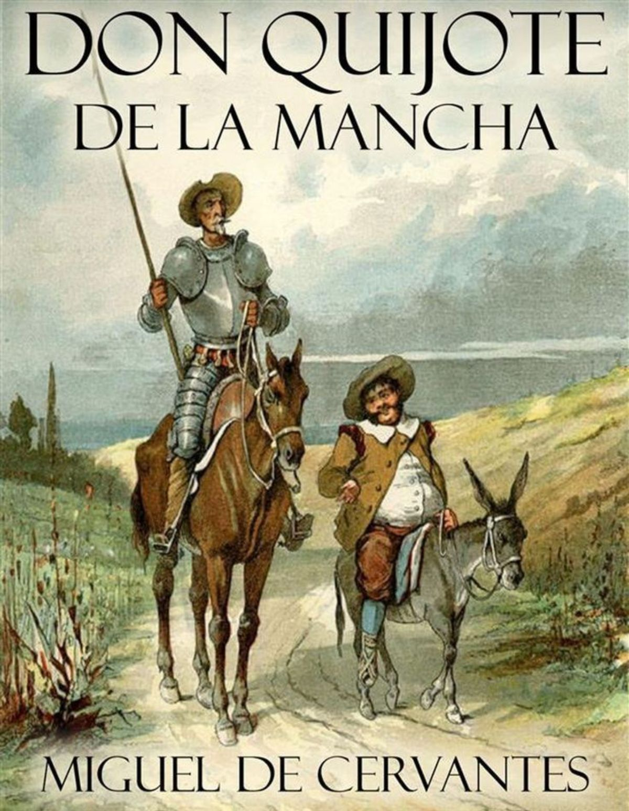

Detalle de Notificación

Préstamo Atrasado
ID Notificación: NT-001
Fecha: 16/06/2026
Estado: No Leída
Información del Préstamo
Usuario: Juan Pérez
Libro: Don Quijote de la Mancha
Fecha de Préstamo: 01/06/2026
Fecha Límite de Devolución: 10/06/2026
Mensaje
El préstamo del libro Don Quijote de la Mancha ha superado la fecha límite de devolución. Se recomienda realizar la devolución lo antes posible para evitar la generación de nuevas multas y mantener actualizado su historial de préstamos.